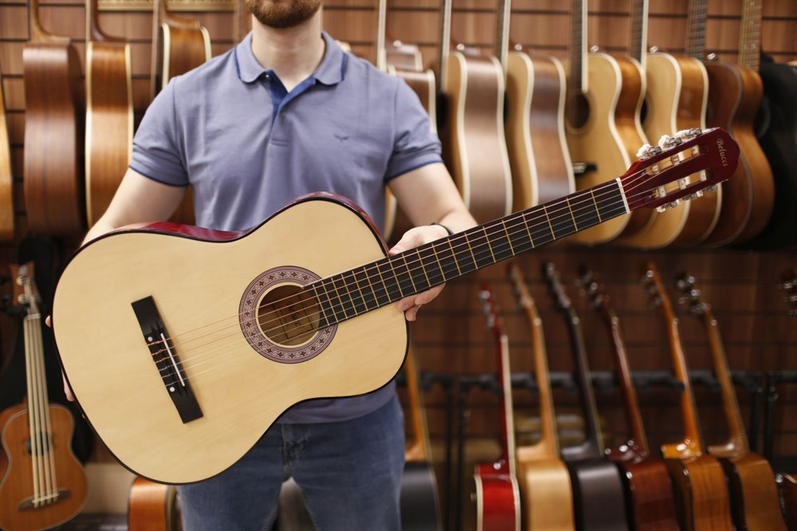
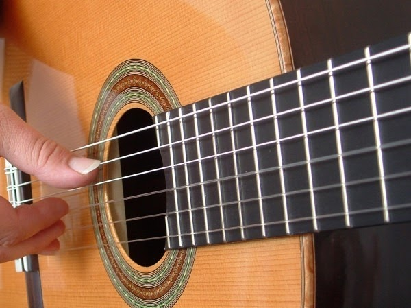
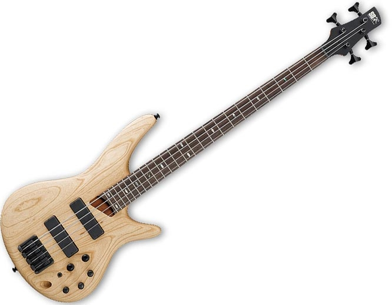

Приветствую на моём сайте любителей музыки!
Здесь для тебя собрана информация о самом популярном инструменте в мире и его основных видах;)
Начнём мы, пожалуй, с истории создания.
Время историй
Предшественниками гитары считаются щипковые инструменты, которые на тот момент ещё не имели грифа: кифара и цитра.
На них играли в Древнем Египте и Древней Греции, а чуть позже – и в Риме. С появлением длинной узкой шейки
появилась необходимость в цельном резонаторе. Изначально его делали из пустотелых сосудов
и других объёмных предметов: панциря черепахи, высушенных плодов тыквы или выдолбленных деревянных отрезков ствола.
Деревянный корпус, составленный их верхней и нижней деки и боковин (обечаек)
придумали в Древнем Китае в начале I тысячелетия нашей эры.
Оттуда эта идея перекочевала в арабские страны, воплотившись в мавританской гитаре,
а в VIII – IX веках пришла в Европу.
Своим названием гитара обязана латинскому языку как общепринятому в период Средневековья. Греческое слово «кифара», которое в Европе уже мало кто мог прочесть после крушения Западной Римской империи, в результате транслитировалось в латинское «cithara». С течением времени латынь также претерпевала изменения – слово имело вид «quitaire», и в романо-германских языках стало звучать как «guitar».
В последствии гитары модернизировались и изменялись, разбившись на много видов и ещё больше подвидов.
Своим названием гитара обязана латинскому языку как общепринятому в период Средневековья. Греческое слово «кифара», которое в Европе уже мало кто мог прочесть после крушения Западной Римской империи, в результате транслитировалось в латинское «cithara». С течением времени латынь также претерпевала изменения – слово имело вид «quitaire», и в романо-германских языках стало звучать как «guitar».
В последствии гитары модернизировались и изменялись, разбившись на много видов и ещё больше подвидов.
История - это конечно занимательно, но хотелось бы узнать о видах гитар.
Виды гитар
Классическая



-На ней Высоцкий играл
Большая, с плоским широким грифом грифом. На неё ставятся нейлоновые струны (в совестком союзе могли и леску поставить). Отличается очень мягким звуком по сравнению с другими гитарами. Есть резонаторное отверстие ("розетка") и полый корпус, поэтому не надо искать "розетку" для игры и можно играть хоть где.
Большая, с плоским широким грифом грифом. На неё ставятся нейлоновые струны (в совестком союзе могли и леску поставить). Отличается очень мягким звуком по сравнению с другими гитарами. Есть резонаторное отверстие ("розетка") и полый корпус, поэтому не надо искать "розетку" для игры и можно играть хоть где.
Акустическая
На ней прекрасно Цоя играть
Улучшенная классическая гитара. обладает ярким звонким звуком. На ней стоят металлические струны, а в грифе есть анкер. Сам гриф уже чем на классической и имеет полукруглую форму для удобства игры. Ещё из-за металлических струн имеет усиленную деку.
Улучшенная классическая гитара. обладает ярким звонким звуком. На ней стоят металлические струны, а в грифе есть анкер. Сам гриф уже чем на классической и имеет полукруглую форму для удобства игры. Ещё из-за металлических струн имеет усиленную деку.
Электроакустика
-Сейчас я её подключу ко всем колонкам
Внебрачный сын акустики и электрогитары. Это по сути обычная акустическая гитара, которую можно подключить к колонкам. Имеет специальные датчики, которые снимают вибрации с корпуса гитары, а также темброблок, который обрабатывает все сигналы с датчиков.
Внебрачный сын акустики и электрогитары. Это по сути обычная акустическая гитара, которую можно подключить к колонкам. Имеет специальные датчики, которые снимают вибрации с корпуса гитары, а также темброблок, который обрабатывает все сигналы с датчиков.
Электрогитара
-Делает "Бж Бж"
Тяжёлая, с плоским корпусом... Она созданна только для игры через колонки. Существует множество их видов, но принцип работы один: Струны металлические, под ними звукосниматель с магнитами и катушкой; Струна дёргается, магнит двигается, в катушке возникает индукционный ток, его обрабатывает внешнее устройство.

Тяжёлая, с плоским корпусом... Она созданна только для игры через колонки. Существует множество их видов, но принцип работы один: Струны металлические, под ними звукосниматель с магнитами и катушкой; Струна дёргается, магнит двигается, в катушке возникает индукционный ток, его обрабатывает внешнее устройство.
Бас-гитара
-О ней никто не слышал...
По сути это электрогитара с 4 струнами. Но эти струны довольно толстые. Её в основном для ритм-секций. Все бас-гитаристы получают проклятие в виде однотипных шуток про них. Правда не известно, жалуются ли они на это, никто не слышал...
По сути это электрогитара с 4 струнами. Но эти струны довольно толстые. Её в основном для ритм-секций. Все бас-гитаристы получают проклятие в виде однотипных шуток про них. Правда не известно, жалуются ли они на это, никто не слышал...